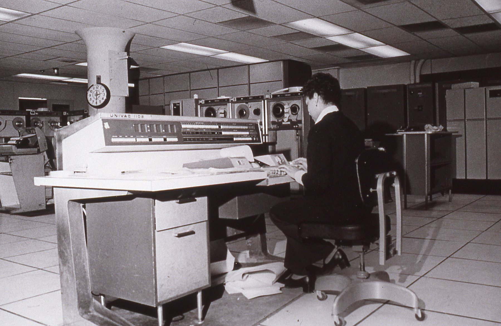
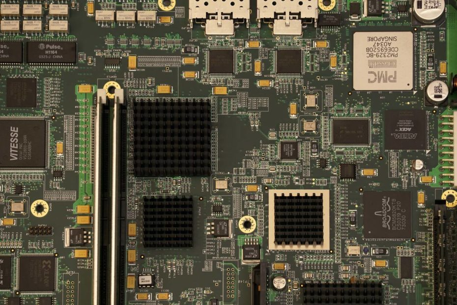

Os computadores da terceira geração funcionavam por circuitos integrados. Esses substituíram os transistores e já apresentavam uma dimensão menor e maior capacidade de processamento. Foi nesse período que os chips foram criados e a utilização de computadores pessoais começou. Nesse tipo de computador, os dados de entrada e saída eram gerenciados por dispositivos periféricos como monitor, teclado ou impressora. Além disso, generalizou-se o uso de sistemas operacionais. A partir desta geração, linguagens de programação de alto nível começaram a ser utilizadas de forma massiva como COBOL, FORTAN, Pascal, etc.

Esses tipos de linguagens diferem das linguagens de baixo nível por serem muito mais próximas da linguagem natural (usada por humanos) do que da linguagem de máquina (código binário). Além disso, elas são portáteis, portanto, podem ser usados em outros dispositivos. Um exemplo de computador de terceira geração foi o UNIVAC 1108, uma atualização do UNIVAC de primeira geração criado na década de 1950.
Circuitos integrados, são basicamente um compilado organizado de vários componentes eletrônicos, um circuito integrado reúne itens como capacitores, resistores, transistores e diodos, de forma que essas partes todas juntas possam realizar ações e comandos diversos. Esses circuitos são como pequenas cidades muito poderosas e, atualmente, presentes em quase todos os equipamentos eletrônicos, ou seja: se você abrir, agora mesmo, o seu computador, celular ou tablet, vai encontrar ao menos um circuito integrado nele parecido com o da imagem abaixo, que garante o funcionamento do seu aparelho.
